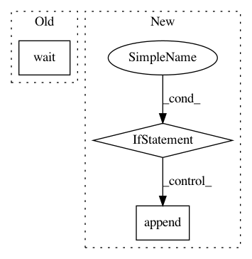

7098738c9f3c41120cffcce7a76fa7e8e86df4ec,autosklearn/automl.py,AutoML,_fit,#AutoML#Any#,340
Before Change
proc_ensembles])
else:
proc_smac.wait()
proc_ensembles.wait()
// Delete AutoSklearn environment variable
del_auto_seed()
After Change
"partial-cv"]:
raise ValueError("Illegal resampling strategy: %s" %
self._resampling_strategy)
if self._resampling_strategy == "partial-cv" and \
self._ensemble_size != 0:
raise ValueError("Resampling strategy partial-cv cannot be used "
"together with ensembles.")
self._backend._make_internals_directory()
if self._keep_models:
os.mkdir(self._backend.get_model_dir())
self._metric = datamanager.info["metric"]
self._task = datamanager.info["task"]
self._label_num = datamanager.info["label_num"]
set_auto_seed(self._seed)
// load data
self._save_ensemble_data(
datamanager.data["X_train"],
datamanager.data["Y_train"])
time_for_load_data = self._stopwatch.wall_elapsed(self._dataset_name)
if self._debug_mode:
self._print_load_time(
self._dataset_name,
self._time_for_task,
time_for_load_data,
self._logger)
// == Perform dummy predictions
self._do_dummy_prediction(datamanager)
// == Calculate metafeatures
meta_features = _calculate_metafeatures(
data_feat_type=datamanager.feat_type,
data_info_task=datamanager.info["task"],
x_train=datamanager.data["X_train"],
y_train=datamanager.data["Y_train"],
basename=self._dataset_name,
watcher=self._stopwatch,
metalearning_cnt=self._initial_configurations_via_metalearning,
logger=self._logger)
self._stopwatch.start_task("OneHot")
datamanager.perform1HotEncoding()
self._ohe = datamanager.encoder
self._stopwatch.stop_task("OneHot")
// == Pickle the data manager
data_manager_path = self._backend.save_datamanager(datamanager)
// = Create a searchspace
self.configuration_space, configspace_path = _create_search_space(
self._tmp_dir,
datamanager.info,
self._backend,
self._stopwatch,
self._logger,
self._include_estimators,
self._include_preprocessors)
self.configuration_space_created_hook(datamanager)
if meta_features is None:
initial_configurations = []
elif datamanager.info["task"] in [MULTICLASS_CLASSIFICATION,
BINARY_CLASSIFICATION]:
meta_features_encoded = _calculate_metafeatures_encoded(
self._dataset_name,
datamanager.data["X_train"],
datamanager.data["Y_train"],
self._stopwatch,
self._logger)
self._logger.debug(meta_features.__repr__(verbosity=2))
self._logger.debug(meta_features_encoded.__repr__(verbosity=2))
initial_configurations = _get_initial_configuration(
meta_features,
meta_features_encoded,
self._dataset_name,
self._metric,
self.configuration_space,
self._task,
self._metadata_directory,
self._initial_configurations_via_metalearning,
datamanager.info[
"is_sparse"],
self._stopwatch,
self._logger)
_print_debug_info_of_init_configuration(
initial_configurations,
self._dataset_name,
self._time_for_task,
self._logger,
self._stopwatch)
else:
initial_configurations = []
self._logger("Metafeatures encoded not calculated")
// == RUN SMAC
proc_smac = run_smac(self._tmp_dir, self._dataset_name,
self._time_for_task, self._ml_memory_limit,
data_manager_path, configspace_path,
initial_configurations, self._per_run_time_limit,
self._stopwatch, self._backend, self._seed,
self._resampling_strategy,
self._resampling_strategy_arguments)
// == RUN ensemble builder
proc_ensembles = _run_ensemble_builder(
self._tmp_dir,
self._output_dir,
self._dataset_name,
self._time_for_task,
self._task,
self._metric,
self._ensemble_size,
self._ensemble_nbest,
self._stopwatch,
self._logger
)
procs = [proc_smac]
if proc_ensembles is not None:
procs.append(proc_ensembles)
if self._queue is not None:
self._queue.put([time_for_load_data, data_manager_path, procs])
else:
In pattern: SUPERPATTERN
Frequency: 3
Non-data size: 3
Instances
Project Name: automl/auto-sklearn
Commit Name: 7098738c9f3c41120cffcce7a76fa7e8e86df4ec
Time: 2015-10-02
Author: feurerm@informatik.uni-freiburg.de
File Name: autosklearn/automl.py
Class Name: AutoML
Method Name: _fit
Project Name: ilastik/ilastik
Commit Name: 6fe60e43efbac200052a76b0a849c4c7cd4654a5
Time: 2018-04-25
Author: jonas.massa@iwr.uni-heidelberg.de
File Name: ilastik/applets/networkClassification/nnClassGui.py
Class Name: NNClassGui
Method Name: pred_nn
Project Name: ilastik/ilastik
Commit Name: ad6d3b2e0a43d45a5a00eb372e9063ac12d9dab1
Time: 2017-03-28
Author: bergs@janelia.hhmi.org
File Name: tests/testOpLazyConnectedComponents.py
Class Name:
Method Name: